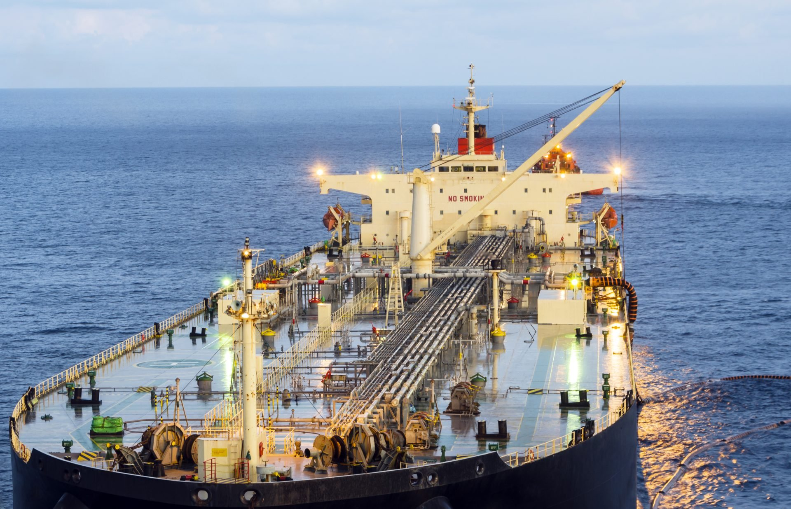
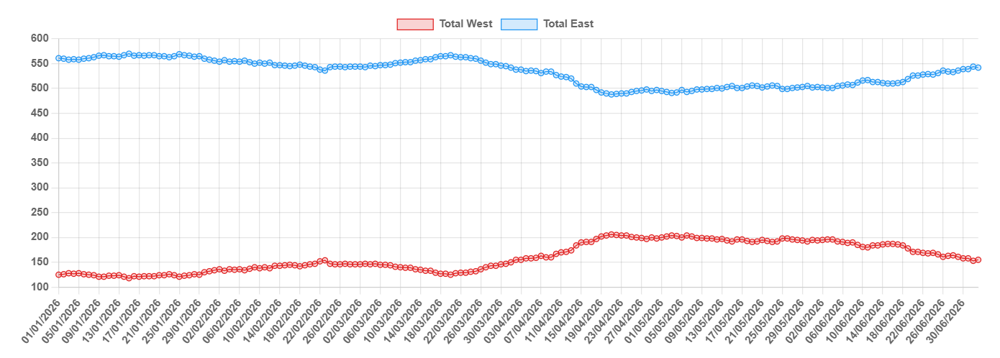

The Middle East tanker market in June was shaped by a cautious recovery as a temporary US-Iran ceasefire helped boost regional transit activity. Both crude and clean product exports saw a significant jump in volumes, offering a welcome lift to regional loadings. However, the increase in activity was quickly met by a growing influx of available vessels, which began outpacing demand and putting downward pressure on record-high spot rates.
Strait of Hormuz transits picked up immediately following the ceasefire. This recovery stalled briefly on 28 June due to ceasefire breaches before rebounding sharply the following day. Despite the improvement, the conflict’s hangover remains significant: at least 80 dirty and clean vessels are still in the Arabian Gulf (AG) since the outbreak of hostilities, while some of these vessels are trading actively across the region. On the operational side, transparency has notably improved, with more vessels now transiting with transponders activated – consistent with the behaviour of most shuttle tankers operating between the AG and the Gulf of Oman.
Total unsanctioned and traceable crude and condensate loadings from the Middle East surged to approximately 12,400 kbd in June, up sharply from 7,900 kbd in May, with the incremental volume primarily benefiting the VLCC segment. Within the region, crude loadings from inside the AG rose to 4,300 kbd, more than doubling the 1,700 kbd average recorded over April and May. Loadings in the Gulf of Oman similarly jumped to 3,900 kbd from 2,400 kbd in May, with ship-to-ship operations continuing to serve as a vital workaround. Red Sea exports via Yanbu remained steady at around 4,200 kbd throughout the month.
Mirroring the crude recovery, total unsanctioned and traceable refined clean product exports from the Middle East rose, though to a lesser extent, reaching over 2,500 kbd in June from 1,900 kbd in May. Loadings from inside the AG rose to around 660 kbd from May’s 350 kbd, while the loadings in the Gulf of Oman led by the STS workaround, also increased to around 900 kbd from 630 kbd in May. While the incremental cargo volume provided some support to larger clean vessels, it was ultimately too modest to absorb the regional tonnage overhang.
Anticipating a demand rebound, some shipowners repositioned vessels into the Gulf of Oman, while growing willingness to transit past Hormuz lengthened the regional tonnage list. Activity in both areas, however, proved insufficient to absorb the mounting vessel supply, exerting severe downward pressure on spot earnings. TD34 earnings slipped heavily from their peak of $275,000/day to roughly $140,000/day by end of June. The risk premium associated with Hormuz transits cushioned the decline for TD3C spot rates, keeping earnings elevated above pre-war levels at around $300,000/day. Product tankers followed a similar trajectory, with TC1 and TC5 undergoing steep corrections to approximately $100,000/day and $70,000/day respectively, both still above their pre-war baselines.
Looking ahead, the market direction rests primarily on the stability of the ceasefire. Further normalisation of Hormuz transit patterns can be expected if the ceasefire holds, prompting broader owner participation in the region. STS workarounds in the Gulf of Oman are nonetheless likely to persist for some time, as major regional suppliers maintain these alternatives as a hedge against lingering security uncertainties.
Near-term, the primary headwind remains on the supply-side. We have already seen VLCC tonnage in the East build up significantly, returning almost to pre-war levels. Other vessel segments are also beginning to shift back to the region, though not yet to a significant degree. This steady influx of vessels, outpacing the slow return of regional cargo volumes, has created a clear supply-demand mismatch. Until the tonnage overhang is cleared by a sustained export recovery, spot rates will face continued downward pressure, though lingering risk premiums should keep market floors from collapsing.
In the dirty segment, the pace of recovery will hinge on how many additional crude stems are offered and successfully lifted. The UAE presents the clearest upside – unconstrained by OPEC quotas following its withdrawal in May, it has room to ramp exports meaningfully as transit confidence improves. That said, as regional refinery activity gradually ramps back up, an increasing portion of domestic crude is expected to be diverted into local refining systems rather than the export market. At the same time, rising domestic power generation demand across the Gulf states as summer peaks will further compete for available crude volumes, capping the pace at which export stems can build. A gradual rather than sharp rate recovery therefore remains the more likely path until export volumes show a sustained and broad-based improvement.
In the clean space, downward pressure on the LR segments may find a floor in the tightness of global clean supply, itself a consequence of the significant dirty-up activity seen over recent months. Switching these units back to clean trade will require an attractive earnings premium – one that is unlikely to emerge without a meaningful recovery in clean cargo volumes, which ultimately depends on the pace of regional refinery restarts and operating conditions normalising.

Data source:Gibson Shipbrokers